法律問答系統的 Retrieval 品質與下游答題效益之系統性評測
LawFactsQA-TW Benchmark × 律師國考 666 題
用 LawFactsQA-TW（中興大學 NLP Lab，ROCLING 2024 論文）測試各方法能否找到正確法條。有外部 baseline 可對標，結論具備學術可信度。
用 108～110 年律師資格考試真題，測試「retrieval → LLM 答題」的實際效益。衡量 RAG 有沒有真正幫助 LLM 答對考題。
哪種 retrieval 方法在台灣法律場景最有效？BM25 vs Dense vs Hybrid vs HyDE？
HyDE（Hypothetical Document Embedding）真的有效嗎？哪個設計最優？
Retrieval 指標（R@10）與下游答題準確率是否相關？能否靠 benchmark 預測效益？
| 項目 | 內容 |
|---|---|
| 資料集 | LawFactsQA-TW（arXiv:2410.11450） |
| Query 數 | 264（人工標註 92 + GPT-4 合成 172） |
| Corpus | 22,728 條（法務部全國法規資料庫） |
| GT 格式 | 每題 1～39 條 gold 法條（multi-article） |
| 主指標 | Recall@10（前10名涵蓋幾條金答案） |
| 副指標 | MRR@10、Hit@10、AP@10、R@50 |
| 外部 baseline | 論文：BM25=0.188, Dense=0.348, Rerank=0.472 |
| 項目 | 內容 |
|---|---|
| 資料集 | 108～110 年律師資格考試真題 |
| 題目數 | 666 題（四選一） |
| Corpus | Production DB（38 部法律，8,470 條） |
| LLM | gpt-4o-mini（temperature=0） |
| Closed-book baseline | 45.20%（不給法條，純 LLM 知識） |
| 統計方法 | Binomial exact test + McNemar pairwise |
| 代號 | 名稱 | 核心設計 | LLM call |
|---|---|---|---|
| A | Dense | text-embedding-3-small cosine 搜尋 | 0 |
| B | BM25 | jieba 分詞 + rank_bm25 詞頻統計 | 0 |
| C | Hybrid | A + B → Reciprocal Rank Fusion（RRF, k=60） | 0 |
| D | Hybrid+Rerank | C 取 top-50 → BGE-reranker → top-10 | 0 |
| E | HyDE-Avg+Orig | 生成 3 條假設法條 + orig query → 4 向量平均 → cosine | 3/query |
| F | Adaptive | dense top-20；相似度低才升級為 E | 0-3/query |
| G | Dense+Rerank | A 取 top-20 → reranker → top-10 | 0 |
| I | HyDE+BM25+Rerank | HyDE dense + BM25 → RRF → reranker | 3/query |
口語問句和法條之間有「詞彙 gap」，把問句先讓 LLM 翻譯成假設的法條語言，再用這段假設條文做 embedding 搜尋，可以縮短這個 gap。
限制 50-100 字、第X條格式。資訊量被壓縮，R@10 最低。
長度不限，可含條號、釋字、法律原則。比 A 高 +0.153 R@10（p≈0）。
同時生成條文、釋字、原則三種視角的假設文字。比 A 高 +0.157 R@10（p≈0）。
以下展示 6 個真實 query 的完整對照，清楚看出 HyDE 如何把口語問句「翻譯」成法條語言。
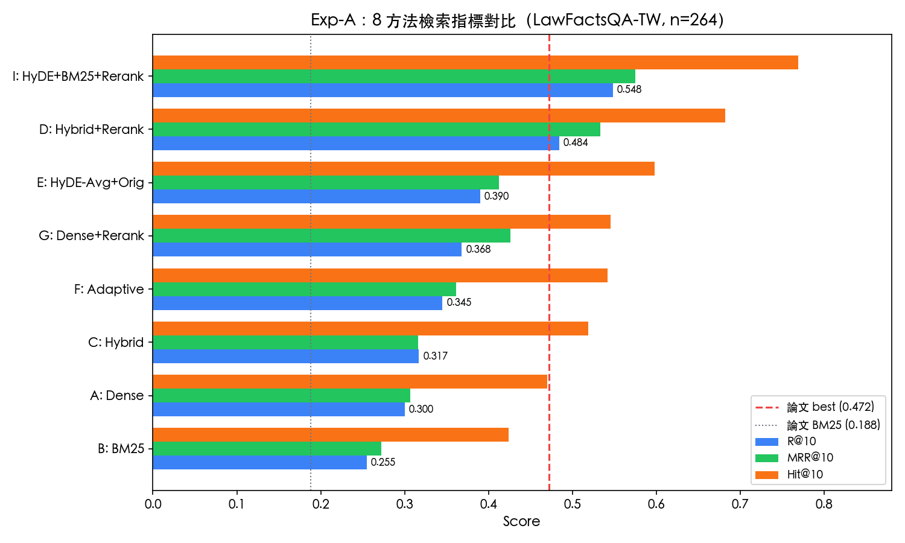
| Method | R@10 | MRR@10 | Hit@10 | Hit@1 | vs 論文 |
|---|---|---|---|---|---|
| I: HyDE+BM25+Rerank | 0.548 | 0.575 | 0.769 | 0.470 | +16.1% |
| D: Hybrid+Rerank | 0.484 | 0.533 | 0.682 | 0.455 | +2.5% |
| E: HyDE-Avg+Orig | 0.390 | 0.412 | 0.598 | 0.318 | -17.4% |
| G: Dense+Rerank | 0.368 | 0.426 | 0.545 | 0.360 | -22.0% |
| F: Adaptive | 0.345 | 0.361 | 0.542 | 0.265 | -26.9% |
| C: Hybrid | 0.317 | 0.316 | 0.519 | 0.242 | -32.8% |
| A: Dense | 0.300 | 0.307 | 0.470 | 0.223 | -36.4% |
| B: BM25 | 0.255 | 0.272 | 0.424 | 0.212 | +35.6% vs 論文BM25 |
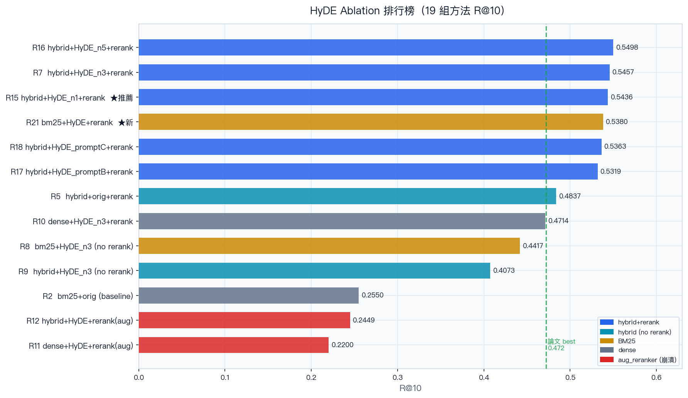
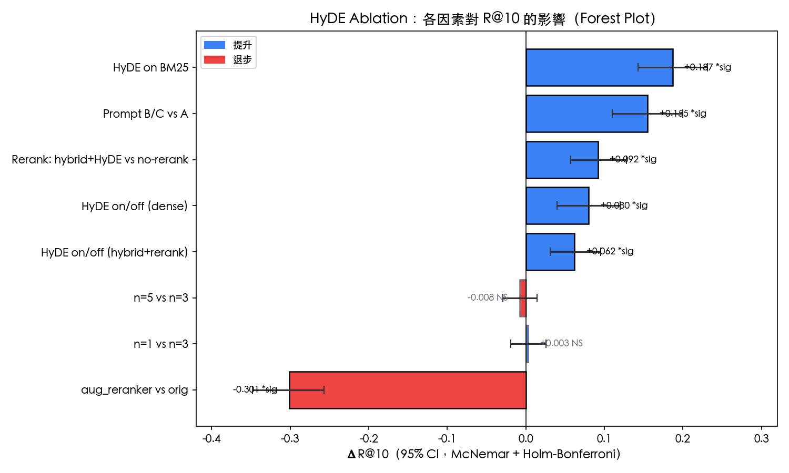
| 比較 | Delta R@10 | 相對改善 | 95% CI | p_adj | 顯著 |
|---|---|---|---|---|---|
| HyDE on BM25 | +0.187 | +73.2% | [0.143, 0.231] | ≈0 | * 顯著 |
| +0.153 | +40.3% | [0.107, 0.197] | ≈0 | — | |
| +0.157 | +41.4% | [0.111, 0.202] | ≈0 | — | |
| Prompt B vs A（控制 pipeline 後） | -0.014 | -2.5% | — | — | NS（R19/R20 控制組） |
| HyDE on/off（dense） | +0.080 | +26.6% | [0.040, 0.120] | 0.0006 | * 顯著 |
| HyDE on/off（hybrid+rerank） | +0.062 | +12.8% | [0.031, 0.095] | 0.0004 | * 顯著 |
| Rerank vs no-rerank（HyDE+dense） | +0.092 | +24.3% | [0.057, 0.128] | ≈0 | * 顯著 |
| n=1 vs n=3 | +0.003 | +0.8% | [-0.019, 0.026] | 1.0 | NS 不顯著 |
| n=5 vs n=3 | -0.008 | -2.0% | [-0.029, 0.014] | 1.0 | NS 不顯著 |
| aug_reranker vs orig | -0.301 | -55.1% | [-0.348, -0.257] | ≈0 | * 顯著崩潰 |
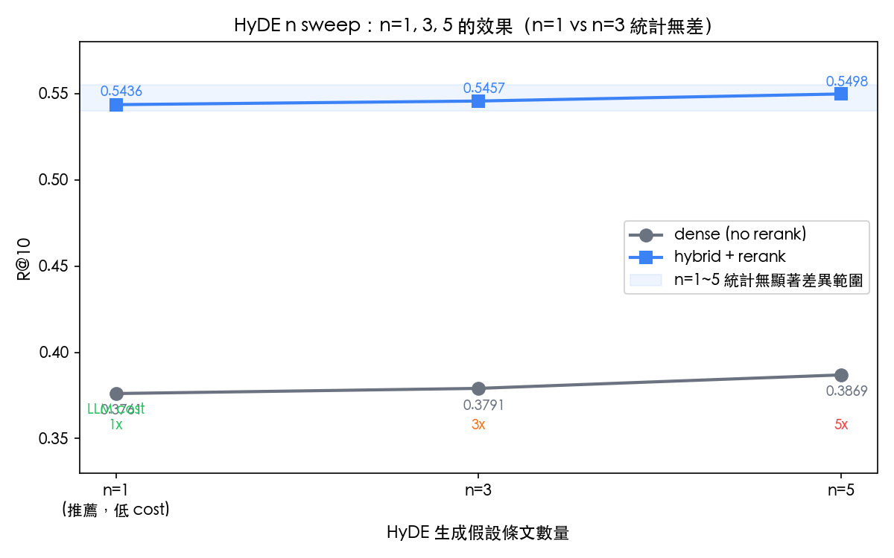
R@10 = 0.5436，超越論文 best（0.472）+11.5%
MRR@10 = 0.5808（18 組最高）
與 R7（n=3）統計平手（Delta=-0.002, p=1.0）
LLM cost 比 n=3 低 67%（1次 call vs 3次）
備選：R5（hybrid+orig+rerank）R@10=0.484，無需 LLM call
不管底層是 BM25、Dense 還是 Hybrid，加了 HyDE 之後 R@10 全部顯著提升。BM25 受益最大（+73.2%），因為口語問句和法條的詞彙 gap 最大，HyDE 直接填平這個 gap。
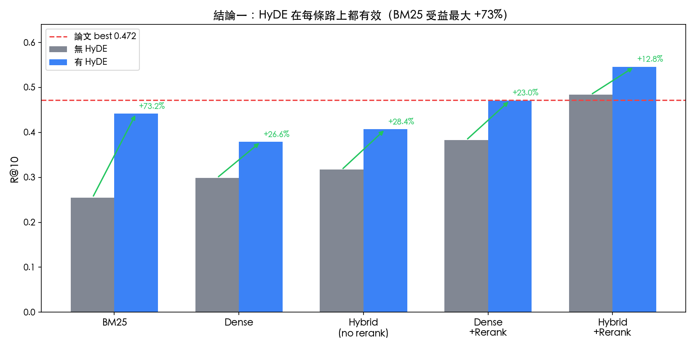
| 升級路徑 | Before（no HyDE） | After（HyDE Prompt A） | +Delta | 相對改善 | p |
|---|---|---|---|---|---|
| BM25：R2 → R8 | 0.255 | 0.442 | +0.187 | +73.2% | ≈0 |
| Hybrid（no rerank）：R3 → R9 | 0.317 | 0.407 | +0.090 | +28.4% | — |
| Dense：R1 → R6 | 0.299 | 0.379 | +0.080 | +26.6% | 0.0006 |
| Dense + Rerank：R4 → R10 | 0.383 | 0.471 | +0.088 | +23.0% | — |
| Hybrid + Rerank：R5 → R7 | 0.484 | 0.546 | +0.062 | +12.8% | 0.0004 |
同樣是加 Reranker，Dense-only 候選池帶來的提升只有 Hybrid 候選池的一半左右。候選池越多樣，Reranker 越能發揮精篩功能。
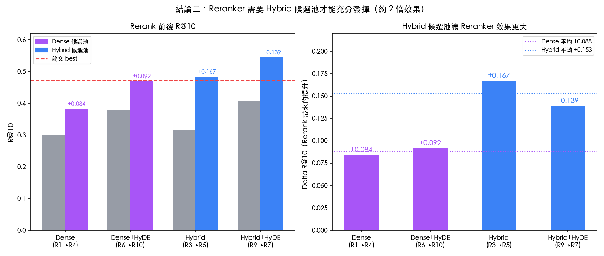
| 升級路徑 | 候選池來源 | Before | After（+Rerank） | +Delta |
|---|---|---|---|---|
| R1 → R4（Dense） | Dense only | 0.299 | 0.383 | +0.084 |
| R6 → R10（Dense+HyDE） | Dense only | 0.379 | 0.471 | +0.092 |
| R3 → R5（Hybrid） | BM25 + Dense | 0.317 | 0.484 | +0.167 |
| R9 → R7（Hybrid+HyDE） | BM25 + Dense | 0.407 | 0.546 | +0.139 |
Prompt B/C（放鬆格式）在 Dense no-rerank 路上比 Prompt A 高出 +0.15 R@10；但在最優 pipeline（hybrid+rerank）上，B/C 反而略低於 A（約 -0.01），差異不顯著。
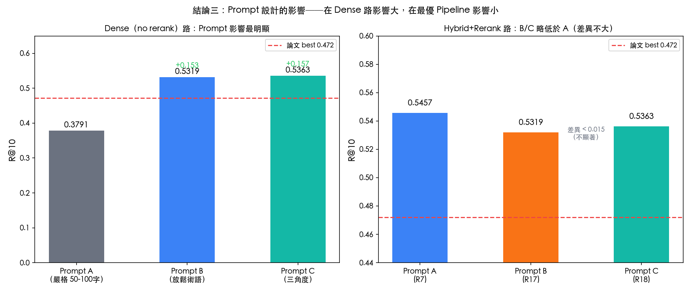
| Prompt | 設計重點 | Dense no-rerank R@10 | Hybrid+Rerank R@10 |
|---|---|---|---|
| A（嚴格） | 50-100字，第X條格式 | 0.379（R6） | 0.546（R7） |
| B（放鬆術語） | 長度不限，可含條號/釋字/原則 | 0.532（R17） | 0.532（R17） |
| C（三角度） | 條文+釋字+原則三視角 JSON | 0.536（R18） | 0.536（R18） |
| Prompt B/C vs A（Delta） | +0.153 / +0.157（p≈0） | -0.014 / -0.010（NS） | |
| Method Code | Source | HyDE | Prompt | Rerank | R@10 | vs 論文 best |
|---|---|---|---|---|---|---|
| R2 | BM25 | ✗ | — | ✗ | 0.255 | -46% |
| R1 | Dense | ✗ | — | ✗ | 0.299 | -37% |
| R3 | Hybrid | ✗ | — | ✗ | 0.317 | -33% |
| R8 | BM25 | A, n=3 | A | ✗ | 0.442 | -6% |
| R21 ★新 | BM25 | A, n=3 | A | orig | 0.538 | +14.0% |
| R4 | Dense | ✗ | — | orig | 0.383 | -19% |
| R5 | Hybrid | ✗ | — | orig | 0.484 | +2.5% |
| R6 | Dense | A, n=3 | A | ✗ | 0.379 | -20% |
| R17 | Hybrid | B, n=3 | B | orig | 0.532 | +12.7% |
| R18 | Hybrid | C, n=3 | C | orig | 0.536 | +13.6% |
| R7 | Hybrid | A, n=3 | A | orig | 0.546 | +15.6% |
| R15 ★推薦 | Hybrid | A, n=1 | A | orig | 0.544 | +15.2% |
| R16 | Hybrid | A, n=5 | A | orig | 0.550 | +16.5% |
★ R15 與 R7/R16 統計無顯著差異（McNemar p>0.5），推薦 R15 是因為 n=1 比 n=3 省 67% LLM call、比 n=5 省 80%。
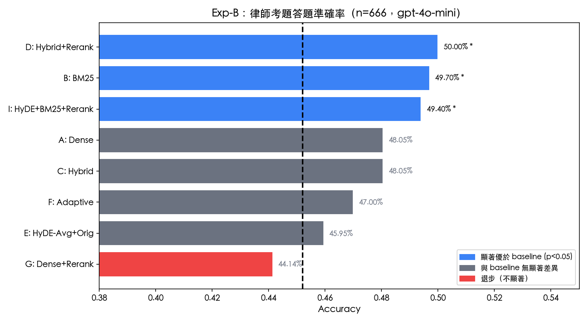
| Method | 正確數 | 準確率 | Delta vs baseline | binomial p | 顯著 |
|---|---|---|---|---|---|
| D: Hybrid+Rerank | 333/666 | 50.00% | +4.80pp | 0.0141 | * 顯著 |
| B: BM25 | 331/666 | 49.70% | +4.50pp | 0.0216 | * 顯著 |
| I: HyDE+BM25+Rerank | 329/666 | 49.40% | +4.20pp | 0.0322 | * 顯著 |
| A: Dense | 320/666 | 48.05% | +2.85pp | 0.1497 | NS |
| C: Hybrid | 320/666 | 48.05% | +2.85pp | 0.1497 | NS |
| F: Adaptive | 313/666 | 47.00% | +1.80pp | 0.3505 | NS |
| E: HyDE-Avg+Orig | 306/666 | 45.95% | +0.75pp | 0.6973 | NS |
| Closed-book baseline | 301/666 | 45.20% | — | — | — |
| G: Dense+Rerank | 294/666 | 44.14% | -1.06pp | 0.6128 | NS（但vs A顯著 p=0.020） |
「外國人需要申請工作許可嗎？」「個人可以找外籍教師嗎？」口語化，多種改寫，BM25 詞彙不匹配法條。
「累犯之規定適用於過失犯嗎？」「瑕疵擔保請求權之消滅時效…」正式法律術語，BM25 幾近完美匹配。
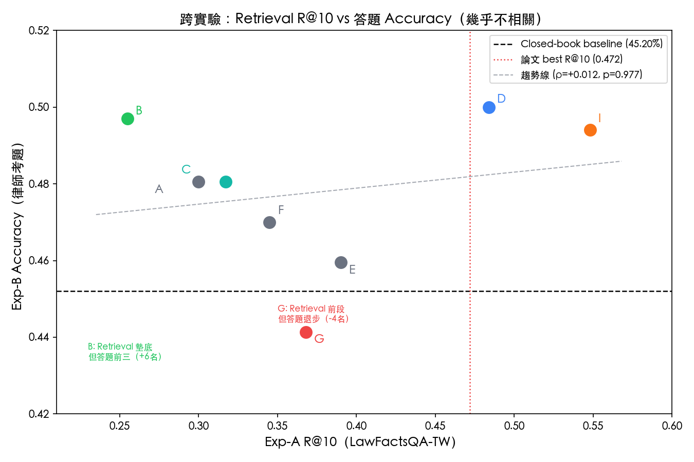
| Method | Exp-A R@10 排名 | Exp-B acc 排名 | 落差 | 說明 |
|---|---|---|---|---|
| I: HyDE+BM25+Rerank | 1 | 3 | 2 | 兩邊都前段 |
| D: Hybrid+Rerank | 2 | 1 | 1 | 最穩定的方法 |
| E: HyDE-Avg+Orig | 3 | 7 | 4 | Retrieval 前段，答題差 |
| G: Dense+Rerank | 4 | 8 | 4 | Retrieval 前段，答題最差 |
| F: Adaptive | 5 | 6 | 1 | 穩定 |
| C: Hybrid | 6 | 5 | 1 | 穩定 |
| A: Dense | 7 | 4 | 3 | 答題比 retrieval 好 |
| B: BM25 | 8 | 2 | 6 | 最大 reverse！ |
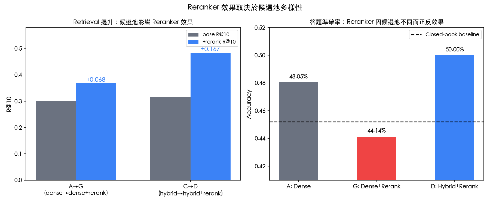
| Pair | only_x | only_y | McNemar p |
|---|---|---|---|
| D vs G | 72 | 33 | 0.0002 ** |
| A vs G（關鍵） | 71 | 45 | 0.0199 * |
| D vs A | 69 | 56 | 0.2831 NS |
Dense-only 候選池同質性過高（text-embedding-3-small 對概念相近的法條給出近似分數）。Reranker 在低多樣性池裡傾向 promote 表面文字最匹配的條文，律師考題常需多條法條交互（民法+釋字），反而遺漏了關鍵條文。
實驗設計：把 HyDE 生成的假設條文一起拼入 reranker 的 query（希望 reranker 也受益於 HyDE）。結果完全反效果。
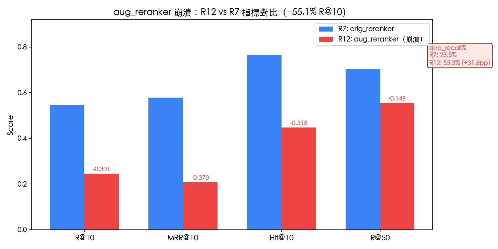
aug_query = orig_query (~29 tokens) + 假設條文 (~270 tokens) = ~299 tokens。Cross-encoder 兩邊都是「法條語言」，50 個候選法條的分數全部偏高且互相接近，reranker 失去區分能力，排序退化為近似隨機。
Embedding 層：成立（+26.6%）— 假設條文把 query 拉近法條空間。
Cross-encoder 層：失效（-55.1%）— 兩邊都是法條，所有候選分數趨同，分辨力消失。
| 指標 | R7（orig reranker） | R12（aug reranker） | Delta |
|---|---|---|---|
| R@10 | 0.5457 | 0.2449 | -0.301 |
| MRR@10 | 0.5780 | 0.2079 | -0.370 |
| Hit@10 | 0.7652 | 0.4470 | -0.318 |
| zero_recall% | 23.5% | 55.3% | +31.8pp |
| R@10 / R@50 比率 | 78% | 44% | -34pp（趨近隨機20%） |
| 結論 | 依據 | p |
|---|---|---|
| HyDE 在所有 retrieval source 上顯著改善 | BM25 +73.2%，dense +26.6%，hybrid+rerank +12.8% | ≈0 / 0.0006 / 0.0004 |
| n=1 與 n=3 無顯著差異（cost -67%） | Delta=+0.003，p=1.0 | 1.0 |
| +0.153/+0.157 是 pipeline 差異，非 prompt 效果；控制後 B/C 比 A 差 -0.01~-0.014（R19/R20） | — | |
| aug_reranker 顯著崩潰 | -0.301 R@10（-55.1%） | ≈0 |
| D/B/I 三者顯著優於 closed-book | +4.8 / +4.5 / +4.2 pp | 0.014 / 0.022 / 0.032 |
| D/B/I 三者之間統計平手 | McNemar p > 0.76（all pairs） | NS |
| A vs G：dense-only 加 reranker 反而顯著退步 | -3.91pp | 0.020 |
| Exp-A 與 Exp-B 幾乎不相關 | Spearman rho = +0.012 | 0.977 |
| BM25 在正式法律術語匹配上強於 dense | B=49.7% > A=48.1%（Exp-B） | — |
| BM25+HyDE 加 reranker 大幅提升（R21） | R8→R21: +0.096 R@10（+21.8%），Hit@10=0.773 超越 hybrid+HyDE | — |
| HyDE 在 production corpus 方向上仍有效（Exp-C） | RC15 vs RC5: +1.6% R@10，miss 從 6 減到 3／190，ceiling effect（synthetic QA） | — |
hybrid + HyDE_n1 + rerank(orig)
R@10 = 0.5436，超論文 best +11.5%
1次 LLM call/query，成本效益最優
準確率 49.70%，顯著優於 baseline
完全不需 LLM call 或 GPU reranker
適合正式法律術語的精確匹配場景
| 問題 | 優先度 | 狀態 |
|---|---|---|
| 高 | ✓ 已解決：R19/R20 確認 temp 效果可忽略（Δ<0.003），B/C 比 A 差 -0.01~-0.014 | |
| 高 | ✓ 已解決：Exp-C synthetic QA R@10 +1.6%（ceiling effect），方向一致 | |
| 中 | ✓ 已解決：R21 R@10=0.538（+21.8%），Hit@10=0.773 | |
| Covered 子集（156 題）的 RAG 效益有多大？ | 高 | 未做：單獨計算 covered 題 accuracy，估計真實天花板 |
| BGE-m3 取代 text-embedding-3-small 的效果？ | 中 | 未做：兩個 embedding 同一 corpus 對照 |
| aug_reranker raw score 分布驗證 | 低 | 未做：重跑 R11 取樣記錄 cross-encoder 分數分布 |